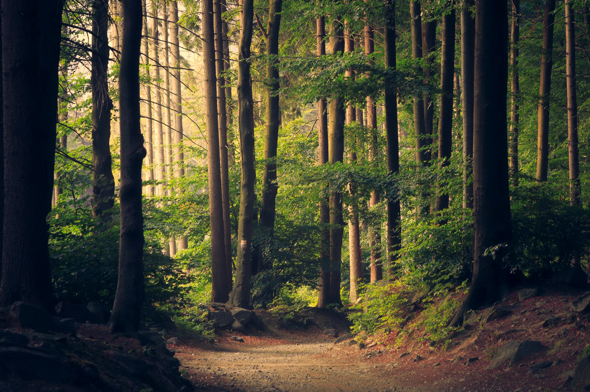
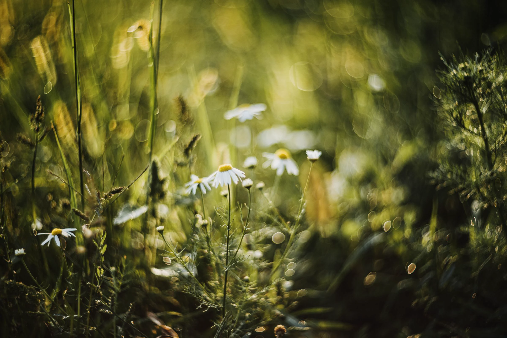

Take the forest path.
Slow down beneath the trees and notice the life all around you.
The world is full of quiet wonders. A flicker in the grass. A river finding its way. The small things remind us that we’re part of something beautifully alive.
Come exploreFrom the smallest wildflower to the deepest woodland, every place has a story worth slowing down for.

Slow down beneath the trees and notice the life all around you.

There’s a whole world living beneath our feet.
“The more we notice,
the more we care.”
Care can begin close to home. Explore a few thoughtful ways to share space with the natural world.
Learn how native plants and thoughtful gardens can welcome pollinators.
Meet the pollinatorsGet to know simple practices for caring for the places you visit.
Explore the principlesDiscover the people and ideas bringing ecosystems back to life.
Learn about restoration